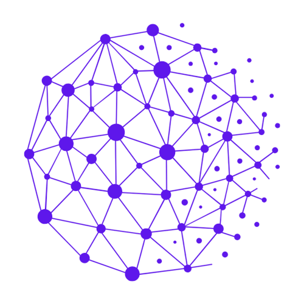

Kubernetes on Azure
Container-aware KQL with deployment filters and env-specific tables

SRE TraceFlowDesigned for Kubernetes microservice architecture and KQL queries for Azure Log Analytics
At a glance
Container-aware KQL with deployment filters and env-specific tables
Extract IDs, format for has_any(), copy ready-to-run queries
Keyword filtering, syntax highlighting, and exportable results
Map databases, services, and deployments per environment
Quick windows from 15m to 30d or custom start/end for KQL
API request chains grouped by trace with status and response times
One-click query copy and filtered log download for handoffs
Pad IDs to 17 digits with leading zeros for database lookups
Auto-highlight trace IDs and errors across large pasted log dumps
Broader KQL templates with contains filters and container scoping